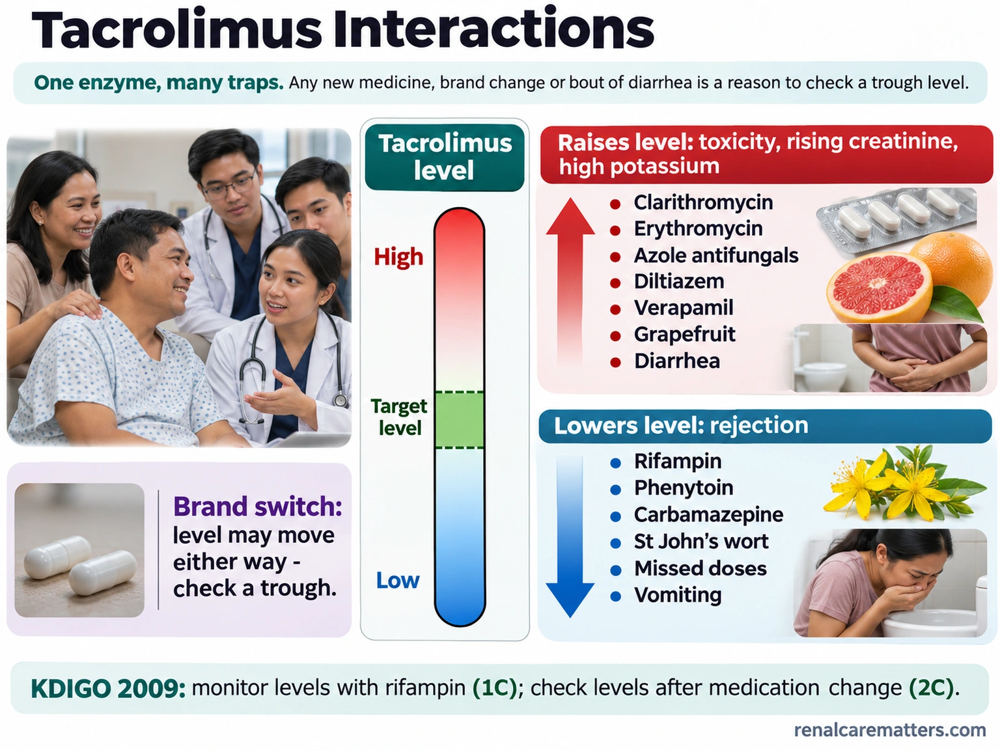
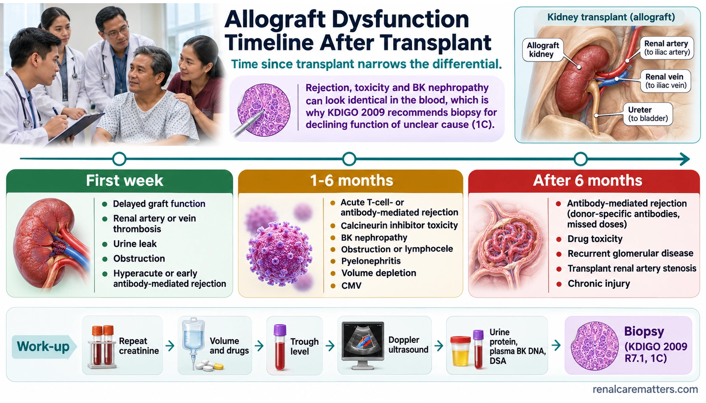

Monitor immunosuppression, catch infection and rejection, and work up a rising creatinine in a transplant patient.
PublishedNailathalaGipatikPepalwal:ReferencesMga SanggunianMga TinubdanReng Reperensya:9Audience: Adult and pediatric nephrology fellows · internal medicine and pediatric residents · medical interns on medicine, pediatrics, ICU and dialysis rotations, and residents who work shifts as dialysis physicians on dutyRead timeOras ng pagbasaOras sa pagbasaOras ning pamamasa:
Training track for nephrology fellows, residents and medical interns
Study material for medical interns, residents and fellows. It explains the reasoning behind common decisions; it is not a protocol and gives no drug doses. Doses, rates and order sets come from current guidelines, product labels, your institution’s approved protocols and your supervising physician. Benefit rules change: confirm them on the date of service. Every case is fictional.
Learning objectives
After this module you should be able to
Intern: Recognize the kidney transplant recipient on your ward, list every medicine they take including generics and recent additions, and report fever, diarrhea, missed doses or a rising creatinine to the transplant team at once.
Resident: Work through a rising creatinine or a fever in a recipient by time since transplant, check drug levels and interactions, and call the transplant team before changing any immunosuppressant or starting an interacting drug.
Fellow: Manage immunosuppression monitoring, cytomegalovirus (CMV), BK polyomavirus and tuberculosis risk, and allograft dysfunction with the Kidney Disease: Improving Global Outcomes (KDIGO) 2009 guideline and current consensus statements, including when to biopsy.
Pre-testBefore you read, answer the 5 self-assessment questions and note your score. After the module, select New set of questions and compare. The difference is what you learned; the questions you still miss are what to reread.
Start here
The big picture, in plain words
Your role · the doctor who sees the recipient firstTransplant recipients rarely present to the transplant center first. They present to a provincial emergency room, a medicine ward or a dialysis unit where a resident is on call. An intern owns the complete medicine list and the first report. A resident owns the first work-up and the call to the transplant team, and must not stop, start or substitute an immunosuppressant on their own. A fellow owns the reasoning about drug levels, infection and rejection, and the decision with the transplant nephrologist about biopsy.
In plain wordsThink of immunosuppression as a leash on a guard dog. The dog is the immune system. Too loose, and it attacks the new kidney. Too tight, and it cannot chase away burglars: infections and cancers walk in.
The picture has a limit. A leash has one length, set once. The right degree of immunosuppression changes with time after transplant, highest in the first months and lower later. And the length of the leash is not under the doctor’s control alone. Tacrolimus, the backbone drug, has a narrow gap between too little and too much, and its blood level moves with diarrhea, with antibiotics and antifungals bought at a corner pharmacy, with a switch to a cheaper brand, and with every missed dose. The same prescription can be too loose one week and too tight the next.
That is why a rising creatinine in a recipient is never just “acute kidney injury (AKI)” and a fever is never just “viral.” Each points to one of a short list of causes whose treatments pull the leash in opposite directions. Treating rejection when the problem is drug toxicity, or reducing immunosuppression when the problem is rejection, can cost the graft.
Figure 1 · Key numbers
Low-dose tacrolimus regimen (ELITE-Symphony, 1,645 recipients, randomized controlled trial (RCT))Biopsy-proven acute rejection at 12 months 12.3% versus 25.8% with standard-dose cyclosporine and 37.2% with low-dose sirolimus
Calcineurin inhibitor levels (KDIGO 2009, R5.1)Measure them (1B), including whenever a medicine or the patient’s condition changes and whenever kidney function declines (2C)
Biopsy (KDIGO 2009, R7.1)Biopsy for declining function of unclear cause (1C)
CMV prophylaxis (KDIGO 2009, R13.2.1)At least 3 months after transplant unless donor and recipient are both CMV-seronegative (1B)
BK screening (2024 consensus)Plasma BK DNA monthly to month 9, then every 3 months to 2 years (3 years in children)
Most recipients you meet are doing well and need only their usual medicines, correctly continued. A few have a graft in danger from rejection, toxicity, infection or obstruction. Your work is to keep every immunosuppressant going at the right level, to sort the cause by time since transplant and by the drug list, and to bring in the transplant team early.
Opening case · fictional
Case: Fever after the switch
Monday, 9 p.m., the emergency room of a provincial hospital in Lipa, Batangas. Mrs. Liza Dimaculangan, 46, received a living-donor kidney from her sister at a Metro Manila transplant center 14 months ago. Her creatinine has been stable at 1.2 mg/dL. Her maintenance regimen is tacrolimus, mycophenolate and prednisone.
Five weeks ago, to save money, she changed to a cheaper tacrolimus brand from a pharmacy near her home. No trough level has been checked since. Four days ago a clinic gave her clarithromycin for a cough. For three days she has had a temperature up to 38.4 °C and loose stools six times a day. Tonight her creatinine is 1.9 mg/dL and potassium 5.6 mmol/L. Her graft is not tender. Her husband, Ramon, says the transplant clinic is “too far, three hours by bus,” and asks if she can just be admitted here.
Before reading on, decide:
What could explain her rising creatinine, and which causes pull treatment in opposite directions?
What do you check tonight, and whom do you call?
What will you advise about her medicines, the clarithromycin and the brand switch?
Keep your answers in mind. The lesson gives you what you need, and the case review near the end shows one sound response.
Lesson · part 1
Immunosuppression: how the drugs work and how their levels move
A T cell needs three signals to attack a graft. Signal 1 is recognition of donor human leukocyte antigens (HLA) through the T-cell receptor. Signal 2 is costimulation. Signal 3 is interleukin-2, which drives the cell to divide. Each drug class blocks a step in that chain.
Drug class
What it blocks
Toxicity you will see
What moves its level
Calcineurin inhibitors (tacrolimus, cyclosporine)
Calcineurin, so interleukin-2 is not transcribed (signal 1 to 3)
Afferent arteriolar vasoconstriction and a rising creatinine; tremor; hyperkalemia; hypomagnesemia; new diabetes; chronic graft scarring
Cytochrome P450 3A4 and P-glycoprotein inhibitors and inducers, diarrhea, brand switches, missed doses
Antiproliferatives (mycophenolate, azathioprine)
Purine synthesis in dividing lymphocytes
Leukopenia, diarrhea, anemia; mycophenolate harms a fetus
Adherence, interactions with some binders
Corticosteroids
Cytokine gene transcription broadly
Diabetes, bone loss, infection, weight gain
Usually fixed
Mammalian target of rapamycin (mTOR) inhibitors (sirolimus, everolimus)
Signal 3 downstream
Poor wound healing, proteinuria, mouth ulcers, high lipids
Same enzymes as tacrolimus
Induction antibodies (T-cell depleting or interleukin-2 receptor blocking)
T cells around the time of surgery
Later infection risk, especially CMV after T-cell depletion
Given once, early
The evidence for the modern backbone. The ELITE-Symphony trial randomized 1,645 recipients to standard-dose cyclosporine, or induction with low-dose cyclosporine, low-dose tacrolimus or low-dose sirolimus, all with mycophenolate and steroids. At 12 months the low-dose tacrolimus group had the highest calculated GFR (65.4 mL per minute versus 56.7 to 59.4), the lowest rate of biopsy-proven acute rejection (12.3%, against 25.8% with standard cyclosporine, 24.0% with low-dose cyclosporine and 37.2% with sirolimus) and the highest graft survival (94.2% against 89.3% to 93.1%).1 The primary end point, calculated GFR, is a surrogate; rejection and graft loss are outcomes patients feel. The trial ran for one year and does not settle long-term choices.
Why levels matter. Tacrolimus has a narrow therapeutic range and highly variable absorption and metabolism. KDIGO 2009 recommends measuring calcineurin inhibitor blood levels (1B), suggesting checks every other day early after transplant until the target is reached, whenever there is a change in medication or patient status that may affect levels, and whenever kidney function declines in a way that may mean toxicity or rejection (each 2C).2 Variability matters too. In a retrospective cohort of 297 recipients, high within-patient variability in tacrolimus clearance between 6 and 12 months was associated with graft loss, chronic allograft nephropathy or doubling of creatinine, even though mean levels were similar in those who failed and those who did not.3 The study was observational; variability may mark nonadherence as much as pharmacology.
The interaction card. Most dangerous interactions run through the same liver and gut enzyme.
Clarithromycin and erythromycin; azole antifungals; diltiazem and verapamil; grapefruit; diarrhea (less gut metabolism)
Rifampin and other rifamycins; phenytoin and carbamazepine; St John’s wort; missed doses; vomiting
KDIGO 2009 recommends monitoring calcineurin inhibitor and mTOR inhibitor levels in patients receiving rifampin (1C), because the fall in levels can be steep.2 For herbal products, assume an interaction until proven otherwise.
Generic switches. In the Philippines, recipients often change tacrolimus brands for cost or because a pharmacy runs out. Bioequivalence standards allow some difference in exposure between products, and a patient whose level sat at the target on one brand may land above or below it on another. A switch is exactly the “change in medication” that KDIGO says should trigger a level.2 Teach recipients to tell the transplant clinic before any change and to keep one brand when they can; when they cannot, arrange a trough level soon after the change.

Figure 2. One enzyme, many traps. Any new medicine, brand change or bout of diarrhea is a reason to check a trough level; KDIGO 2009 recommends level monitoring with rifampin (1C).
RememberEvery new medicine, every brand change and every bout of diarrhea in a recipient is a reason to ask what just happened to the tacrolimus level.
Lesson · part 2
A rising creatinine: sort the cause by time since transplant
A creatinine rise in a recipient has the causes of AKI in anyone, plus four special ones: rejection, calcineurin inhibitor toxicity, BK polyomavirus nephropathy and recurrent disease. The time since transplant tells you which are likely.
Time since transplant
Most likely causes
Clues
First week
Delayed graft function from ischemic injury; renal artery or vein thrombosis; urine leak; obstruction; hyperacute or early antibody-mediated rejection
Sudden anuria, graft pain, falling urine output after a good start, fluid around the graft on ultrasound
1 to 6 months
Acute T-cell-mediated or antibody-mediated rejection; calcineurin inhibitor toxicity; BK nephropathy; obstruction or lymphocele; pyelonephritis; volume depletion; CMV
Drug level, BK deoxyribonucleic acid (DNA) in plasma, urine culture, Doppler ultrasound
After 6 months
Antibody-mediated rejection from donor-specific antibodies, often after missed doses or under-immunosuppression; drug toxicity; recurrent glomerular disease; transplant renal artery stenosis; chronic injury
Adherence history, proteinuria, donor-specific antibody testing, new hypertension
The work-up in order. First, confirm the rise with a repeat value and look at the trend; the site’s allograft estimated glomerular filtration rate (eGFR) trend calculator helps you see slope rather than noise. Second, look for the easy, reversible causes: dehydration from diarrhea, a new drug, urinary retention or infection. Third, check the trough level. Fourth, get a graft ultrasound with Doppler to exclude obstruction, collections and vascular problems. Fifth, check urine protein, plasma BK DNA and, through the transplant team, donor-specific antibodies.
When to biopsy. KDIGO 2009 recommends a kidney allograft biopsy for all patients with declining kidney function of unclear cause, to detect potentially reversible causes (1C), and a biopsy before treating acute rejection unless the biopsy would substantially delay treatment (1C).2 The reason is mechanistic: rejection, toxicity and BK nephropathy can all look the same in the blood, but they need opposite moves on the leash. Treating presumed rejection with more immunosuppression in a patient with BK nephropathy feeds the virus.
Philippine practice. Graft biopsy, C4d staining, BK testing and donor-specific antibody testing are available at transplant centers but not in most provincial hospitals. That makes the phone call to the transplant team, and often transfer, part of the work-up. A trough level can usually be sent out; ask the laboratory for its turnaround before you rely on it tonight.
In childrenAdolescents carry the highest risk of late rejection from missed doses, and the move from pediatric to adult care is a dangerous moment for the graft. Growth, school and puberty change drug handling and adherence. BK screening runs to 3 years after transplant in children, and the 2024 consensus allows biopsy for persistent BK DNA even without graft dysfunction. See Attending Pediatric Nephrologist, Module 27.

Figure 3. Time since transplant narrows the differential. Rejection, toxicity and BK nephropathy can look identical in the blood, which is why KDIGO 2009 recommends biopsy for declining function of unclear cause (1C).
Stop and callStop and call the transplant team or the attending nephrologist, per unit protocol, but always ask the attending nephrologist for guidance, when:
Any unexplained rise in creatinine, or falling urine output, in a recipient
Graft pain or tenderness, or fever with a tender graft
Vomiting or diarrhea that stops the patient from taking or absorbing immunosuppressants
A new medicine that interacts with tacrolimus has been started or is being considered
Missed immunosuppressant doses, or a brand switch without a level
Potassium high enough to need urgent treatment
RememberTreat a recipient’s creatinine rise as rejection, toxicity, infection or obstruction until proven otherwise, and do not adjust immunosuppression before the transplant team and, usually, a biopsy have spoken.
Lesson · part 3
Infection: CMV, BK and tuberculosis in a Philippine recipient
Infection after transplant follows a timetable set by the intensity of immunosuppression. In the first month, surgical-site, line and urinary infections dominate, as after any operation. From about one to six months, when immunosuppression is most intense, opportunistic infections appear: CMV, BK, Pneumocystis, and reactivation of latent tuberculosis. After six months, most infections are community-acquired, but a recipient who has been treated for rejection is back in the high-risk window.
CMV. The highest risk is a seronegative recipient of a seropositive donor’s kidney, who meets the virus for the first time while immunosuppressed.4 CMV causes fever, leukopenia, diarrhea and hepatitis, and it is also associated with rejection and graft loss. KDIGO 2009 recommends that recipients receive antiviral chemoprophylaxis for at least 3 months after transplantation (1B) and for 6 weeks after treatment with a T-cell-depleting antibody (1C), except when donor and recipient are both CMV-seronegative.2 The third international consensus (2018) describes prophylaxis and pre-emptive monitoring strategies by risk group.4 Drug choice and duration come from the transplant center.
BK polyomavirus. Most adults carry BK virus silently in the urinary tract. Under immunosuppression it replicates in tubular cells, spills into the blood (BK DNAemia) and can scar the graft (BK nephropathy), with a rising creatinine that mimics rejection. The 2024 international consensus lists risk factors including older recipient age, male sex, tacrolimus, acute rejection and higher steroid exposure. It recommends screening all recipients for plasma BK DNA monthly until month 9 and then every 3 months until 2 years (3 years in children); in resource-limited settings, urine cytology at the same time points can exclude nephropathy, with plasma testing when decoy cells appear. For BK DNA persisting above 1,000 copies/mL, exceeding 10,000 copies/mL, or biopsy-proven nephropathy, it advises stepwise reduction of immunosuppression; it found no support for leflunomide, cidofovir, quinolones or intravenous immunoglobulin.5
The older KDIGO 2009 guideline suggested screening by nucleic acid testing (2C), monthly for the first 3 to 6 months and then every 3 months to the end of the first year (2D).2 The two documents disagree on the schedule because the consensus is 15 years newer, used later evidence and the Grading of Recommendations Assessment, Development and Evaluation (GRADE) method, and found screening cost-effective. Follow your transplant center’s protocol; most now follow the newer schedule where testing is affordable.
Tuberculosis. The Philippines carried about 6.8% of the world’s tuberculosis cases in 2024 on World Health Organization estimates.6 A recipient with latent infection may reactivate under immunosuppression, often with atypical or extrapulmonary disease. KDIGO 2009 suggests that prophylaxis and treatment regimens be the same as those used in the local general population (2D), and recommends monitoring calcineurin and mTOR inhibitor levels in patients receiving rifampin (1C).2 Rifampin is a powerful enzyme inducer: started without warning, it can drop tacrolimus levels enough to cause rejection within weeks. The infectious diseases team chooses the regimen; you make sure the transplant team knows before the first dose.
Fever in a recipient: question
Why you ask it
How long since transplant, and any recent rejection treatment?
Sets the infection timetable
CMV status of donor and recipient; prophylaxis stopped when?
CMV often appears soon after prophylaxis ends
Graft tender? Urine findings?
Graft pyelonephritis or rejection
Cough, night sweats, weight loss, contact history?
Tuberculosis
Floodwater, mosquito exposure, local outbreaks?
Leptospirosis and dengue happen to recipients too, and can hit a single kidney hard
New antibiotics or antifungals already given?
Interaction with tacrolimus
Live vaccines, such as varicella, measles-mumps-rubella, yellow fever and oral typhoid, are avoided after transplant; inactivated vaccines are given.2 Vaccination is best brought up to date before transplant, while the immune system can still respond.
RememberIn a febrile recipient, think timetable, think CMV, BK and tuberculosis, and think about what any antimicrobial will do to the tacrolimus level before it is given.
Lesson · part 4
Long-term care: keeping the graft, and the patient, alive
The survival benefit of transplantation lasts only while the graft works. In the long-term data from the United States, recipients had an annual death rate of 3.8 per 100 patient-years against 6.3 among those still waiting.7 When a graft fails, the patient returns to dialysis with a sensitized immune system and often a harder path to a second transplant. Long-term care protects that gain.
Long-term threat
Mechanism
What KDIGO 2009 suggests or recommends
Nonadherence
Missed doses allow donor-specific antibodies and late rejection
Nonadherence is associated with a high risk of acute rejection and graft loss (not graded); consider education and support for recipients and families
Blood pressure goal below 130/80 mm Hg in adults (2C); manage lipids and glucose
Skin and other cancers
Immune surveillance is reduced
Annual skin and lip examination by a qualified health professional (2D); age-appropriate cancer screening
New diabetes after transplant
Tacrolimus and steroids impair insulin secretion and action
Screen glucose regularly
Pregnancy
Mycophenolate harms the fetus; graft and pregnancy affect each other
Plan pregnancy with the transplant team; review drugs before conception
The rows above are from the 2009 guideline.2 It is now old, written before several newer drugs and before current BK and CMV evidence. Where a newer consensus or a later KDIGO guideline covers a topic, the transplant center will follow the newer document; tell the learner, and the patient, which one you are quoting.
Philippine practice. Immunosuppressants are a lifelong cost, largely out of pocket. Philippine Health Insurance Corporation (PhilHealth) has a post-kidney transplant services benefit; the transplant center’s PhilHealth office confirms what it covers.8 The kidney transplantation Z benefit (PhilHealth Circular 2026-0019, Revision 1) covers immunosuppressants only in the induction phase, until 1 week after discharge, and states that patients remain eligible for hemodialysis or peritoneal dialysis benefits if the graft fails from rejection, infection, acute kidney injury or other complications; confirm the effective date and current rules with the PhilHealth liaison on the date of service.9 Supply gaps happen: a pharmacy runs out of a brand, a typhoon closes the road to the city. Teach recipients to keep a buffer of at least two weeks of every immunosuppressant, to carry a written medicine list with brand names, and to call the transplant clinic before running out, not after. Recipients in the provinces should know which nearby hospital can draw a trough level and where to send it.
What each of you does on a ward. The intern writes down every medicine by name and brand, including what was bought last week, and confirms the next dose time; immunosuppressants are not “held” because the patient is on nothing by mouth (NPO) without an explicit decision. The resident calls the transplant team on admission, not on discharge. The fellow reviews the trough, the interaction list and the infection timetable, and agrees with the transplant nephrologist on whether biopsy or transfer is needed.
RememberKeep every immunosuppressant going, at the right level, on the right brand, through every admission, and call the transplant team on day one.
On the floor
Real situations: problems and solutions
These are fictional but typical. For each one, cover the answer, decide what you would do, then compare. Where a step depends on local rules, your unit’s procedure and your supervisor’s direction come first.
The antifungal from the clinic
What you see
A recipient 2 years after transplant comes to a Davao emergency room with tremor and a creatinine up from 1.3 to 2.0 mg/dL. A week ago a skin clinic gave her an oral azole for a rash.
What is likely going on
Tacrolimus toxicity from an azole raising the level.
What to do
Send a trough level, assess volume and potassium, stop nothing on your own, and call the transplant team about the azole and the tacrolimus dose.
Why it matters
Azoles inhibit tacrolimus metabolism; the fix is a drug decision, not more immunosuppression.
The man who ran out
What you see
During typhoon season a recipient in Catanduanes missed four days of tacrolimus because the ferry stopped and his pharmacy ran out. His creatinine is rising.
What is likely going on
Possible acute rejection from under-immunosuppression.
What to do
Restart his medicine as the transplant team directs, check a level, call the team urgently about biopsy or transfer, and help him set up a two-week buffer.
Why it matters
Missed doses are a leading cause of rejection; supply gaps are predictable in an archipelago.
Fever after prophylaxis ended
What you see
A recipient 4 months after transplant, CMV donor-positive and recipient-negative, has fever, leukopenia and diarrhea a month after her antiviral prophylaxis ended.
What is likely going on
Probable CMV disease.
What to do
Send CMV testing through the transplant center, review her blood count and liver tests, and call the transplant team the same day.
Why it matters
Seronegative recipients of seropositive kidneys carry the highest CMV risk, often soon after prophylaxis stops.
The rising creatinine and the BK result
What you see
A recipient 6 months after transplant has a slow creatinine rise. Plasma BK DNA is above 10,000 copies/mL.
What is likely going on
Probable BK DNAemia with possible nephropathy.
What to do
Report to the transplant team, who will usually reduce immunosuppression stepwise and decide on biopsy.
Why it matters
Treating presumed rejection with more immunosuppression would feed the virus.
Field notes
Ask every recipient: “What brand of tacrolimus, since when, and what new medicines this month?”
Time the trough level before the next dose and write the time on the request.
Keep the transplant center’s 24-hour number in the ward’s contact list.
Never hold immunosuppressants for nothing-by-mouth status without an explicit plan.
Before any antibiotic, antifungal or antituberculosis drug, check its effect on tacrolimus.
Case review
Back to the case: Fever after the switch
The causes. Several are likely at once. Clarithromycin and diarrhea both raise tacrolimus levels, so calcineurin inhibitor toxicity, with hyperkalemia, is likely; diarrhea also causes volume depletion. The brand switch five weeks ago without a level could have pushed her level either way: too low invites acute rejection, too high adds toxicity. Fever and diarrhea at 14 months could be CMV, another infection or a drug effect, and BK nephropathy remains possible. Toxicity and volume depletion call for less drug and more fluid; rejection calls for more immunosuppression; BK nephropathy calls for less. That is why nobody guesses.
Tonight. Assess volume and treat potassium per protocol. Send a tacrolimus trough (timed before the next dose), a complete blood count, electrolytes and magnesium, urinalysis and urine culture, blood cultures, and stool studies. Arrange a graft ultrasound with Doppler. Ask the transplant center about CMV and BK testing and whether samples can be sent from Lipa. Call the transplant team tonight with the drug list, the switch, the clarithromycin and the numbers; agree whether she stays here or transfers. Biopsy, if needed, will be at the transplant center (KDIGO 2009 R7.1, 1C).
The medicines. Do not stop her immunosuppressants on your own. Raise the clarithromycin with the transplant team: it should usually be replaced by an antibiotic that does not raise tacrolimus, if one is still needed. Any change in her tacrolimus dose waits for the level and the team’s decision. Explain to Mrs. Dimaculangan and Ramon that brand changes are allowed only with a level check soon after, ideally on one consistent brand, and that every new medicine, including from local clinics, must be cleared with the transplant team first. Refer them to the center’s PhilHealth office about the post-transplant benefit, since cost drove the switch.
Interactive case · fictional
Interactive case: Night sweats at seven months
Work through a shift one decision at a time. The panel at the top changes with what you choose. After each choice you see why it is, or is not, the best move; after a weaker one you can try again or carry on and see where it leads. Your first choice at each step is scored. The score stays on this device and nothing is sent anywhere. In real practice, your unit’s protocol and the people responsible for each decision come first.
Skills lab · with your preceptor
Skills checklist: Transplant follow-up and allograft dysfunction
Complete with a preceptor, in simulation or at your own unit. Sign-off is local. Your preceptor rates each step as satisfactory, needs practice, or not observed. Steps marked Critical must all be satisfactory before sign-off. This checklist supports supervised learning; your unit’s own procedure and competency form are the authority. A printable version of every checklist is on the trainer page.
Takes a complete transplant medicine history, including brand, recent switches and all new drugs
Lists the causes of a rising creatinine by time since transplant and orders the first-line work-up
Identifies drugs that raise or lower tacrolimus levels on a real medicine list
Applies the CMV and BK screening and prophylaxis statements with their sources and grades
Presents a recipient to the transplant team by phone with drug level, interactions and timeline
Placement activity. Medicine ward, transplant clinic or simulation
Self-assessment
Check your understanding
Each visit draws 5 questions at random from this module’s 5-question bank. Choose the single best answer for each, then select Check answers; an explanation appears under the best answer. Select New set of questions for a different mix. A good target is 4 of 5 on two different sets. Nothing you select is sent anywhere; scoring happens in your browser.
Ekberg, H., Tedesco-Silva, H., Demirbas, A., Vítko, S., Nashan, B., Gürkan, A., Margreiter, R., Hugo, C., Grinyó, J. M., Frei, U., Vanrenterghem, Y., Daloze, P., Halloran, P. F., & ELITE-Symphony Study. (2007). Reduced exposure to calcineurin inhibitors in renal transplantation. New England Journal of Medicine, 357(25), 2562–2575. https://doi.org/10.1056/NEJMoa067411
Kidney Disease: Improving Global Outcomes (KDIGO) Transplant Work Group. (2009). KDIGO clinical practice guideline for the care of kidney transplant recipients. American Journal of Transplantation, 9(Suppl. 3), S1–S155. https://doi.org/10.1111/j.1600-6143.2009.02834.x
Borra, L. C. P., Roodnat, J. I., Kal, J. A., Mathot, R. A. A., Weimar, W., & van Gelder, T. (2010). High within-patient variability in the clearance of tacrolimus is a risk factor for poor long-term outcome after kidney transplantation. Nephrology Dialysis Transplantation, 25(8), 2757–2763. https://doi.org/10.1093/ndt/gfq096
Kotton, C. N., Kumar, D., Caliendo, A. M., Huprikar, S., Chou, S., Danziger-Isakov, L., Humar, A., & The Transplantation Society International CMV Consensus Group. (2018). The third international consensus guidelines on the management of cytomegalovirus in solid-organ transplantation. Transplantation, 102(6), 900–931. https://doi.org/10.1097/TP.0000000000002191
Kotton, C. N., Kamar, N., Wojciechowski, D., Eder, M., Hopfer, H., Randhawa, P., Sester, M., Comoli, P., Tedesco Silva, H., Knoll, G., Brennan, D. C., Trofe-Clark, J., Pape, L., Axelrod, D., Kiberd, B., Wong, G., Hirsch, H. H., & Transplantation Society International BK Polyomavirus Consensus Group. (2024). The second international consensus guidelines on the management of BK polyomavirus in kidney transplantation. Transplantation, 108(9), 1834–1866. https://doi.org/10.1097/TP.0000000000004976
Wolfe, R. A., Ashby, V. B., Milford, E. L., Ojo, A. O., Ettenger, R. E., Agodoa, L. Y., Held, P. J., & Port, F. K. (1999). Comparison of mortality in all patients on dialysis, patients on dialysis awaiting transplantation, and recipients of a first cadaveric transplant. New England Journal of Medicine, 341(23), 1725–1730. https://doi.org/10.1056/NEJM199912023412303
Educational self-study for physicians in training. Clinical tasks need your institution’s authorization and supervision. Completing this track is an Academy learning record only. It does not confer licensure, specialist status, PSN or PNSP membership or board eligibility, procedural privileges, CPD units, or completion of an institutional training program, and it does not replace current guidelines, regulations, your institution’s protocols and formulary, or your supervisor.